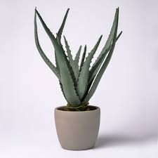
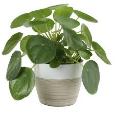
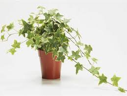

By: Sydney Hutchins
  
Indoor plants not only brighten up any living space, they also provide lots of health benefits. As we all know, plants absorb carbon dioxide and release oxygen during the day, so they purify the air within our homes. Plants remove about 87% of toxins from the air and also release about 97% of the water that they take in. This increased the humidity in the home helps reduce the frequency of respiratory disease including coughing, dry throat, and even keeps skin moisturized! Adding plants to hospital rooms also improves the health of surgical patients. Compared to recovery rooms without plants, patients required less pain medication, have lower heart rate and blood pressure, less fatigue and anxiety, and were discharged from the hospital sooner. Even in office spaces, having plants decreases the likelihood of contracting illness and flu-like symptoms from coworkers. Just by having a plant around your house, you will experience an increase in happiness and attentiveness.
Reference: 5 Benefits of Houseplants
| Plant | Water | Sunlight |
|---|---|---|
| Aloe Vera | low | meduim/high |
| Boston Fern | high | low/medium |
| English Ivy | medium | medium |
| Fiddle Leaf Fig | high | low |
| Peace Lily | medium | low |
| Snake Plant | low | low |